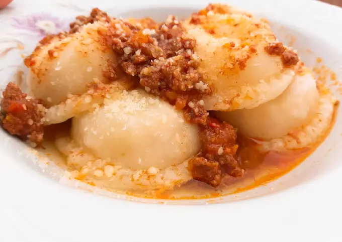

APRENDE A PREPARAR LOS MEJORES SORRENTINOS DE JAMON Y QUESO

El sorrentino es una pasta redonda rellena que generalmente nos presenta una mezcla de queso y jamón cocido. Los quesos usados en este tipo de pasta suelen ser variados, aunque generalmente se usa el ricota. Así mismo, algunos exponentes, presentan nueces picadas, aunque en realidad las combinaciones actuales son muy variadas. Una de las pastas que más se le asemejan y se relacionan con su origen son los ravioles.
Hay distintas versiones de su origen. La más popular vincula a los Sorrentinos con Italia, es decir con la ciudad de Sorrento. La leyenda de esta pasta dice que en Sorrento, un día 8 del año 1958, el señor Somar Luar llegó a Buon Mangiare y pidió al cocinero del restaurante que le cocinara unas pastas originales. El cocinero creó los Sorrentinos con un relleno de jamón cocido y quesos mozzarella y provolone.
Otra versión los vincula con una familia, emigrada de Sorrento, y radicada en Mar del Plata que habría creado la original pasta con su forma redonda.
INGREDIENTES
500 gr harina 0000
3 cdas aceite
15 gr sal fina
1 huevo
200 cc agua caliente
200 gr jamón cocido
200 gr mozzarella
400 gr ricota
40 gr queso rallado
sal, pimienta y nuez moscada a gusto
Preparación
En un bowls poner harina, sal, aceite y huevo. Tomar la masa con el agua caliente. Ojo, poco a poco y de ser necesario poner un poco...pero solo un poco más de harina. Tapar y dejar descansar 20 minutos.
Mientras preparamos el relleno. Picar el jamón, agregar la ricota, el queso rallado y condimentar
Estirar la masa por partes sobre la mesa enharinada. No debe quedar ni muy fina ni demasiado gruesa. Colocar sobre la sorrentinera espolvoreada con harina. Ir colocando el relleno y un dadito de muzzarella. Tapar con la otra parte de masa.
Marcar suavemente con el palo de amasar sin arrastrar el relleno. Yo me termino de ayudar con la mano. Dar vuelta sobre la mesada espolvoreada con un poco de harina y vamos con la siguiente tanda así hasta terminar la masa.
Cocinar en abundante agua (con sal) hirviendo, pero ojo no a borbotones para que no revienten. Una vez que suben son unos minutitos. Yo apagué y los deje en la olla tapada unos 3 o 4 minutos más. Acompañar con tu salsa favorita.